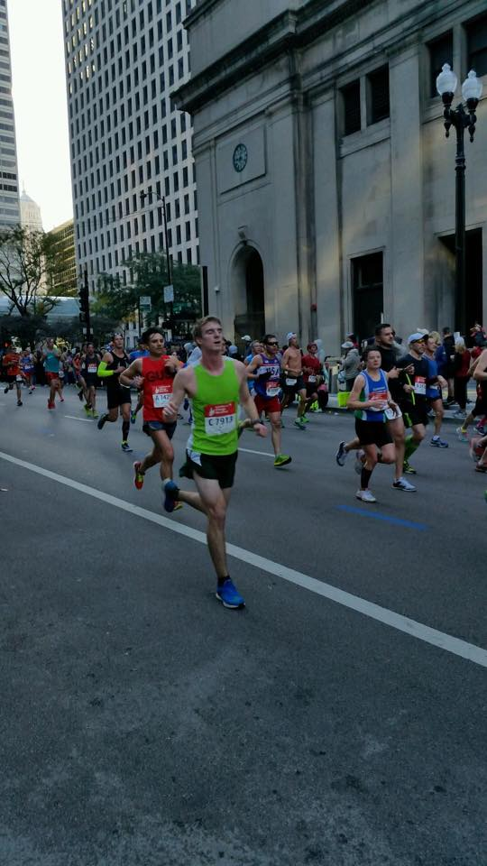

- Past/present Jobs
- Objectives
- Projects
- Volunteer Work
- My Sports Career
- Beers I Like
- Family
- Movies I enjoy
- Products I am interested in
- FaceBook, Twitter, Instagram, Untaped
The Awesome Stuff I Have Done This Month
Just finished my first Marathon at the age of 22. Ran the first 18-miles at 6:40 pace and was right on pace for breaking three hours. Then before I knew it I had leg cramps in both legs. From mile 18 to mile 26.2 I had to walk hobble jog all the way to the finish. Those last 8 miles was probably one of the most difficult things that I have ever had to do mentally. Having to go #2 in the middle of the race would have been better then having leg craps in both legs. Once you get leg cramps in a race there is no way of getting rid of them, unless you stop for a few hours and stretch. Good news is I finished my first marathon and got run all around Chicago. I finished the Marathon in 3 hours and 24 minutes, not bad for having leg cramps for 8 mile.
